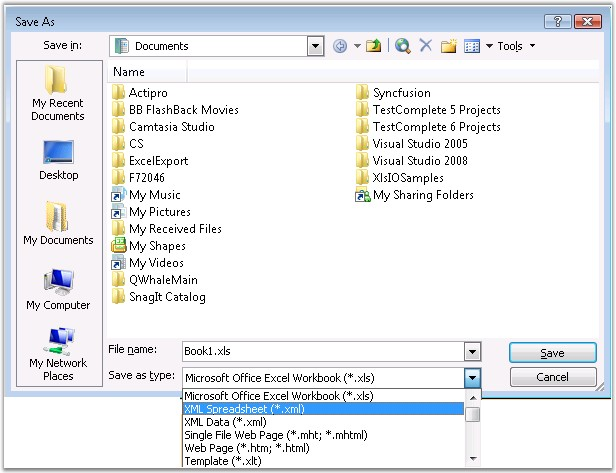

SpreadsheetML is an XML dialect developed by Microsoft to represent the information in an Excel workbook. SpreadsheetML allows you to save Excel workbooks as XML documents, and to open them in Excel. Microsoft created a format that allows you to save, in an XML-based file, almost every Excel customization (including formulas, data, and formatting).
SpreadsheetML file can be created with Office 2003 by selecting the Save as type: as XML Spreadsheet (*.xml).

Figure 31: Saving as Xml Spreadsheet
Saving Excel Workbooks as XML By Using Essential XlsIO
Essential XlsIO provides support for reading and writing objects to SpreadsheetML format. Creating a SpreadsheetML file from scratch, has no difference when compared to the API used for Excel97-2003 format, except for the way it is saved.
Here is the code snippet for creating a SpreadsheetML file.
|
[C#]
//Create a new workbook IWorkbook workbook = excelEngine.Excel.Workbooks.Create(3);
//The first worksheet object in the worksheets collection is accessed. IWorksheet sheet = workbook.Worksheets[0];
//Write data sheet.Range["C3:O28"].Text = "Hello world";
//Save as SpreadsheetML. workbook.SaveAsXml("Sample.xml", ExcelXmlSaveType.MSExcel); |
|
[VB.NET]
'Create a new workbook Dim workbook As IWorkbook = excelEngine.Excel.Workbooks.Create(3)
'The first worksheet object in the worksheets collection is accessed. Dim sheet As IWorksheet = workbook.Worksheets(0)
'Write data sheet.Range("C3:O28").Text = "Hello world"
'Save as SpreadsheetML. workbook.SaveAsXml("Sample.xml",ExcelXmlSaveType.MSExcel) |
Following code example illustrates how to open an existing SpreadsheetML file.
|
[C#]
//Open an existing SpreadsheetMl file. IWorkbook workbook = excelEngine.Excel.Workbooks.Open("spreadsheetml.xml", ExcelXmlOpenType.MSExcel);
//The first worksheet object in the worksheets collection is accessed. IWorksheet sheet = workbook.Worksheets[0];
//Write data sheet.Range["C3:O28"].Text = "Hello world";
//Save as SpreadsheetML. workbook.SaveAsXml("Sample.xml", ExcelXmlSaveType.MSExcel); |
|
[VB.NET]
'Open an existing SpreadsheetMl file. Dim workbook As IWorkbook = excelEngine.Excel.Workbooks.Open("spreadsheetml", ExcelXmlOpenType.MSExcel)
'The first worksheet object in the worksheets collection is accessed. Dim sheet As IWorksheet = workbook.Worksheets(0)
'Write data sheet.Range("C3:O28").Text = "Hello world"
'Save as SpreadsheetML. workbook.SaveAsXml("Sample.xml",ExcelXmlSaveType.MSExcel) |
 Note: Currently XlsIO cannot parse the Document
Properties apart from elements that are not supported by MS Excel. Colors
created by XlsIO will choose the closest color to it when exported to the
SpreadsheetML format. For more information refer Excel 97 to 2003, Excel 2007 [.Xlsx-Biff12 format],
and CSV format.
Note: Currently XlsIO cannot parse the Document
Properties apart from elements that are not supported by MS Excel. Colors
created by XlsIO will choose the closest color to it when exported to the
SpreadsheetML format. For more information refer Excel 97 to 2003, Excel 2007 [.Xlsx-Biff12 format],
and CSV format.